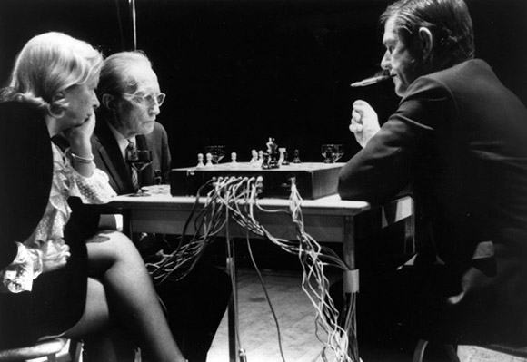

How Long is a Game of Chess?
Victoria Miguel
In 2003, I wrote an MA thesis for the Liberal Studies Department at the New School University in New York exploring the relationship between art, literature, music, and chess. The thesis simultaneously presented a discussion of the use of chess in Cage and Beckett’s work, through an imaginary conversation between Cage and Beckett, and the interjections of the Narrator, and asked and answered the overarching question that provided the structure for the thesis: could the chess game from Beckett’s 1938 novel Murphy be used as the structure for a performance of Cage’s 1968 composition Reunion? In 2011, Laura Kuhn, the director of the John Cage Trust, invited me to revisit the thesis and develop a new way to present and perform Reunion. The result is two separate, but symbiotic, projects: Laquearia, a stage adaptation of the thesis that incorporates a live performance of the new version of Reunion, and the online, digital version of Reunion hosted here by the John Cage Trust.
At the time of its creation Reunion used cutting-edge technology designed and developed for Cage by Lowell Cross. Therefore, the most appropriate way to approach the recreation of Reunion seemed to me to be to take advantage of the enormous technological advances that have taken place since 1968 and make an online version that would allow the widest possible access to the new Reunion. Initially, I approached Scott Kildall to discuss adapting his wonderful Playing Duchamp, a Duchamp chess engine based on seventy-two recorded tournament games Duchamp played in the 1920’s and 1930’s. At the premiere of Reunion in Toronto on the 5th of March 1968, Cage played two games; the first against Marcel Duchamp, who taught Cage to play chess; this game lasted only half an hour despite Duchamp’s handicap (he played with only one Knight), and a second game against Duchamp’s second wife, Teeny (Alexina) Duchamp. The second game remained unfinished at 1am, at which point a sleepy Duchamp memorized the last moves and positions of the pieces; the game was finished in New York five days later: Teeny won. Adapting Playing Duchamp for the new version of Reunion would have honored the relationship between Cage, Duchamp, and chess, but it would also have imposed limits on Reunion, and the spirit of indeterminacy, fundamental to the composition, would have been lost.
John Cage, Marcel Duchamp, & Teeny Duchamp performing Reunion at its premiere in Toronto, 5th March, 1968. Photograph by Lynn Rosenthal, courtesy of The John Cage Trust.
Reunion is an event without a score; originally performed by playing a game of chess on a chessboard created by Lowell Cross. The game works as an indeterminate structure: as a game of chess is played, the moves of the players on the board activate four compositions and distribute them to eight speakers surrounding the audience. The digital version of Reunion, created by Christopher Jefferson and Ian Miguel of the University of St Andrews’ School of Computer Science recreates, as faithfully as possible, the original indeterminate structure devised by Cage and Cross. Chris and Ian discuss how they approached the creation of Reunion in their essay Digital Reunion. They created two versions, one for use over the Internet through a web browser, the other for live performance; both use recorded, rather than live, music; the biggest deviation from the original version of Reunion. In 1968, the chess games ‘activated’ live performances of compositions by Gordon Mumma, Lowell Cross, David Behrman, and David Tudor: Cage’s friends and peers. In the spirit of Cage, new music was commissioned for this version of Reunion: Chess (2013) by Jacob Carpenter Morris, excerpts from Train Tracks and Harpsichord Remix (2013) by Marc Thorman, and Please, Wait (2013) by Lynn Wright, with Cage’s composition Chess Pieces (1943), originally created for The Imagery of Chess exhibition organized by Duchamp, Max Ernst, and Julien Levy at the Julien Levy Gallery in New York (1944-45), to reunite the new version with the old.
The digital version of Reunion premiered with the first performance of Laquearia at the Edinburgh Festival Fringe on the 2nd of August 2013, where the game from Beckett’s Murphy was used as the chess-structure for the performance; depending on your point of view this may, or may not, have been a ‘true’ performance of Reunion. Digital Reunion now has a permanent home at johncage.org, where the online chess game will allow anyone who chooses to participate to play a game of chess, create the structure for the composition, and listen to Reunion.
As long as it takes, or until Duchamp is sleepy.
Victoria Miguel